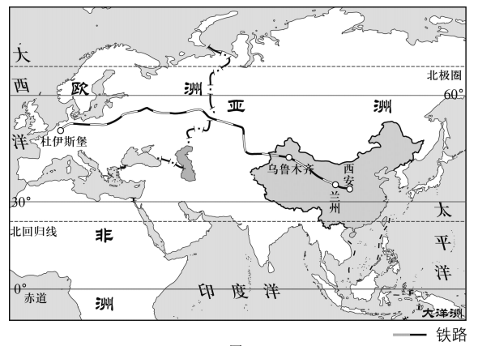
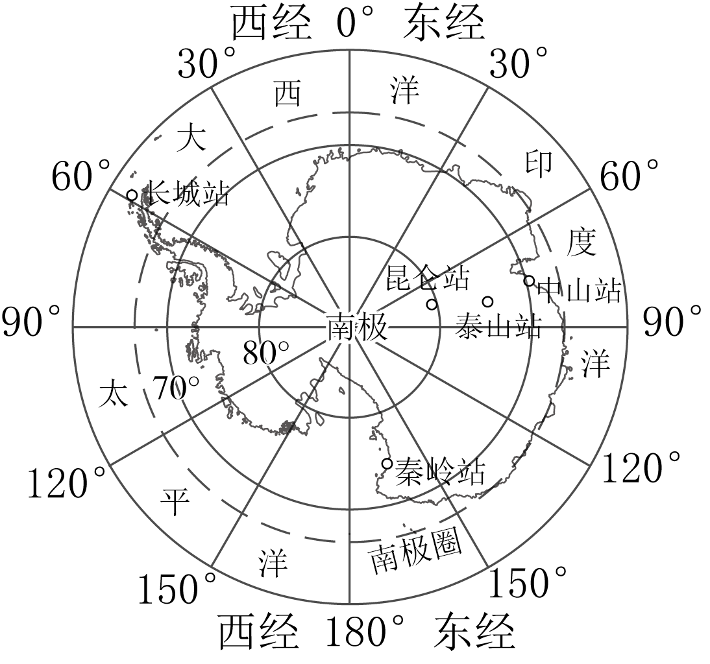

2024年北京市房山区初中学业水平考试地理试卷 · 选择题 第16、17、18、19、20题
某新能源汽车自主研发的电池技术已经达到了世界领先水平。2022年，借“一带一路”东风，该新能源汽车搭乘中欧班列“长安号”，从西安国际港务区出发，运往欧洲。如图为中欧班列“长安号”线路图。读图，完成下面小题。

16. 中欧班列“长安号”线路（ ）
A. 途经亚洲和欧洲B. 垂直于纬线C. 连接太平洋和印度洋D. 穿过了赤道
17. 中欧班列“长安号”的开通（ ）
A. 能够完全取代海洋运输B. 加强沿线各国贸易往来
C. 增强亚洲与非洲的合作D. 改善沿线各国生态环境
中国第40次南极考察，建设第五个科学考察基地秦岭站，同时对南极磷虾开展了深度的基因组测序、组装和分析。南极磷虾具有固碳作用，能有效减少大气中的二氧化碳。如图为南极地区示意图。读图，完成下面小题。

18. 秦岭站（ ）
A. 位于北极点附近B. 位于南温带
C. 位于南极圈以内D. 面向大西洋
19. 保护南极磷虾能够缓解（ ）
A. 酸雨B. 沙尘暴C. 全球变暖D. 土壤盐碱化
20. 在南极地区还可以开展的考察与研究有（ ）
①臭氧层变化②人口分布③大气组成④海冰动态
A. ①②③B. ①②④C. ②③④D. ①③④